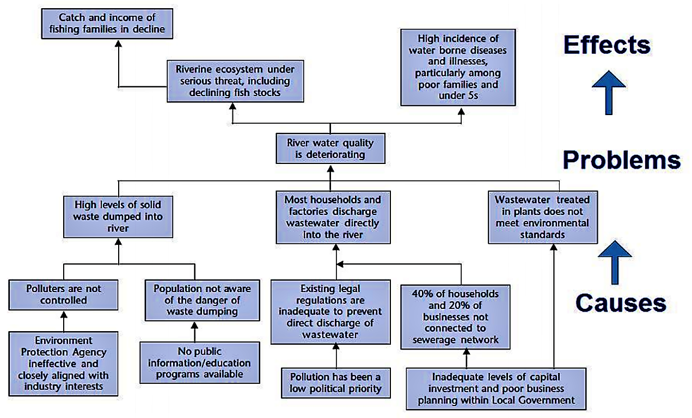
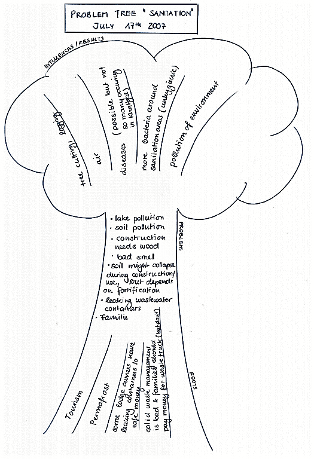
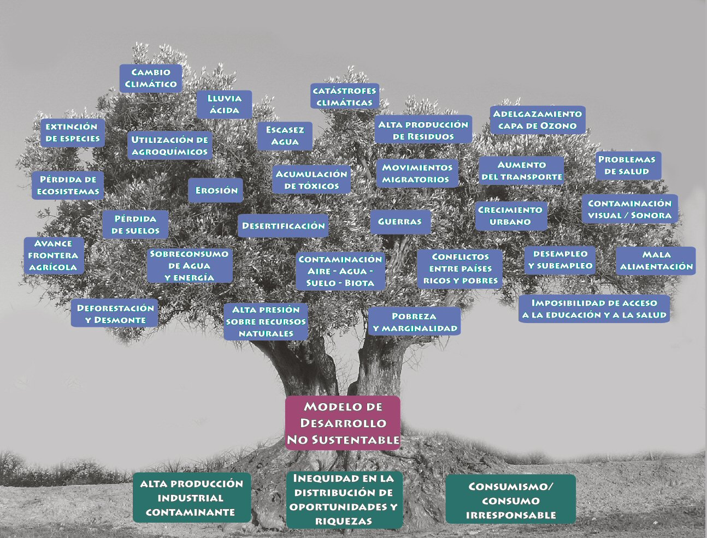
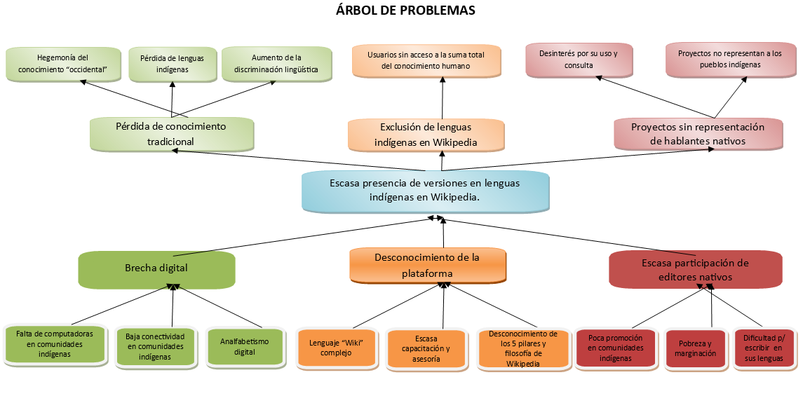
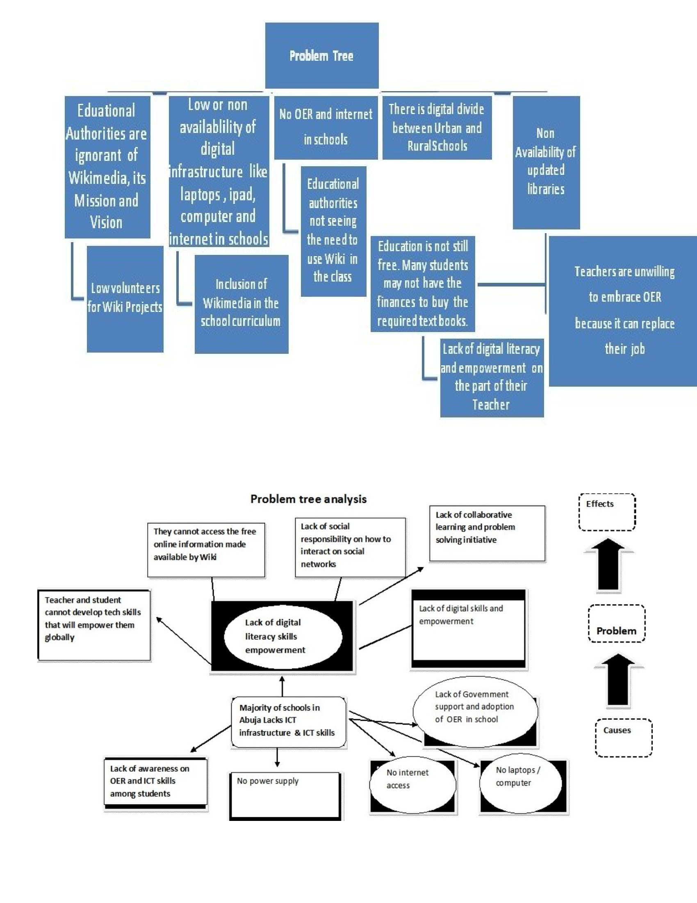

Problem tree
About
A problem tree places a core problem at the trunk, its underlying drivers as roots spreading below, and its consequences as branches reaching above — a structure that deliberately separates symptoms from causes. By forcing a team to trace a visible problem down to its roots, it guards against the common failure of designing solutions for surface symptoms. The tree is often mirrored into an objective tree, where each cause is restated as an aim and each effect as an outcome, turning a diagnosis directly into a set of solution directions.
When to use
Use a problem tree to frame a complex, ill-defined problem, to perform root-cause analysis, and to align a team on what actually needs solving before any solution work begins.
When not to use
Avoid a problem tree for simple, well-understood problems where the causes are already obvious, and reach instead for a causal loop diagram when relationships form feedback loops rather than a one-way cause-and-effect hierarchy.
References
Examples
Click any example to view full size and visit the original source.




